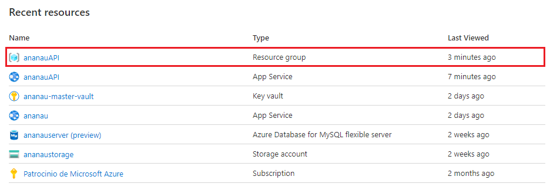
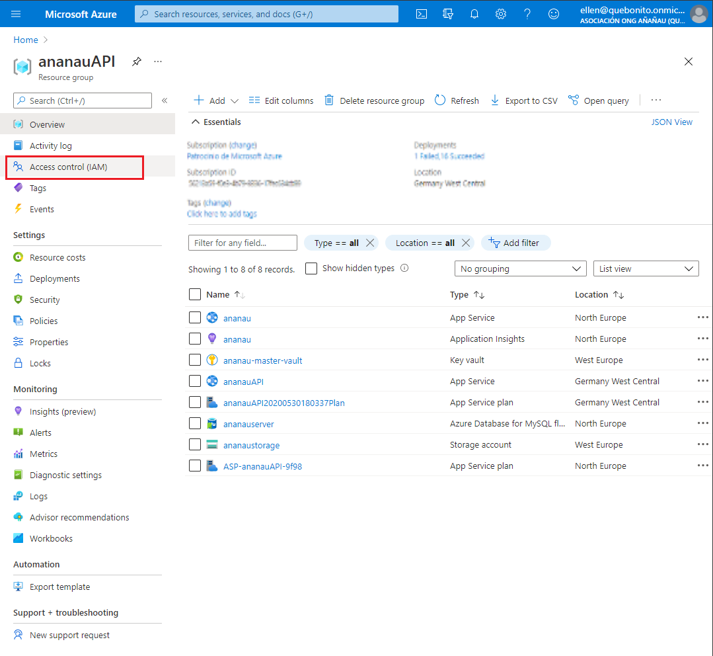
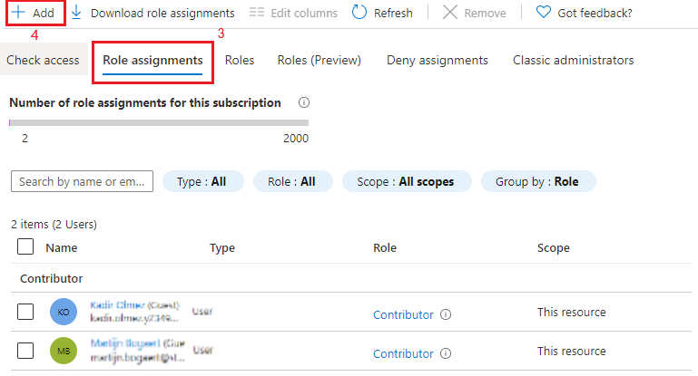
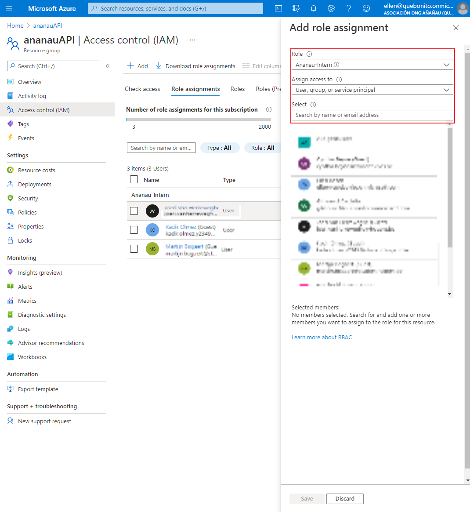

Created: 29/04/2021 | Last Update: 29/04/2021
In order to begin working for Ananau and all of her projects we need access, lets sort that out first!
We need access to multiple resources in order to start developing. Managing logins and passwords in a correct and secure manner is very important. So it would be a bad idea to simply list them all here. We are using a key vault on Azure to store all of our credentials. Below is a step by step instruction to access the vault and username/password combinations.
Log in to Azure and open the Ananau Resource Group named ananauAPI. If you don't have access to the Azure portal yet please contact Ellen Bosh or Gilmourd Cardeña Pérez. They can give you access to the portal, step-by-step instructions can be found below.
In the past everyone logged in from the same master account with all the permissions for the Azure portal. This is not the best solution for obvious reasons. We've switched to using Azure role-based access control (Azure RBAC), the official documentation can be found here.
Log in to Azure with the owner account ellen@quebonito.onmicrosoft.com. You will be presented with an overview like below, please select the resource group named ananauAPI.
Click on Access Control (IAM) which is located on the left navigation panel.
Click on Role Assignments (3) which is located on the top navigation bar within the IAM control panel. Next click on + Add (4) and select Add role assignment from the dropdown to assign a new role to a user.
A side-panel will show up where you need to fill in the following information and click on Save.
The user has been granted access to the resource group.
